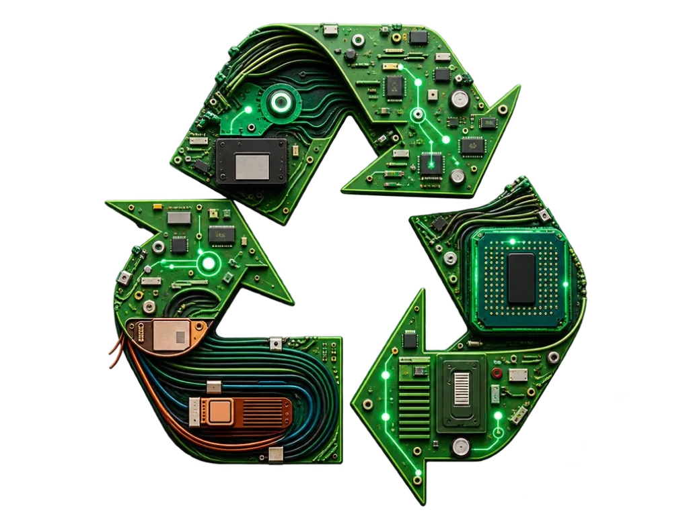
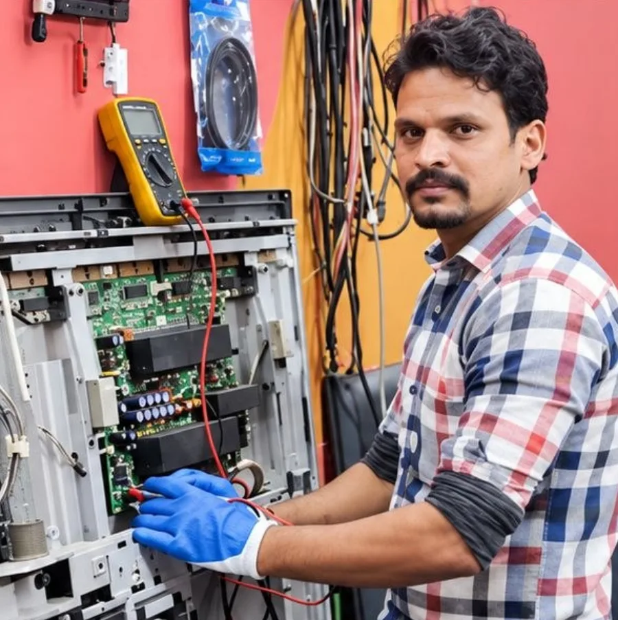

ImpactSustainability
Repair is one of the most practical forms of sustainability.
A TV that's repaired instead of thrown away keeps working — and nobody has to manufacture its replacement.
01 Carbon
What a repair actually saves.
Three numbers: how many units you repaired, the carbon it takes to make one, and how many would otherwise have been thrown away.

02 People
Technology that creates opportunity.
Sustainability includes people, not only waste. A better tool raises what the person using it can take on.

- 01TrainLearn the workflow, not just the buttons.
- 02EquipGet the instrument the work needs.
- 03EnableTake on repairs you used to refuse.
- 04EarnHigher-value work, same bench.
- 05GrowHire, train others, specialise.
03 Alignment
Aligned with four UN goals.
Alignment, not endorsement — EDIO has no UN partnership, affiliation or certification.
- 08Decent work and economic growthOpportunities for skilled repair professionals.
- 09Industry, innovation and infrastructureAdvanced repair infrastructure.
- 12Responsible consumption and productionLonger product lifecycles.
- 13Climate actionLess demand from premature replacement.
04 How we report
Verified and modelled, never mixed.
Current verified impact
Published only where we hold evidence: named deployments, counted technicians, dated events.
— —
Empty on purpose, for now. We'd rather show nothing than guess.
Future potential impact
Modelled outcomes, always labelled, always with assumptions attached — never counted alongside verified figures.
Technicians equipped×Repair capability×Devices serviced
— Build with us
Repair more. Waste less. Build smarter.
Working on sustainability, refurbishment or recycling? Tell us who you are and a person from the team will reply.
Talk to EDIO →